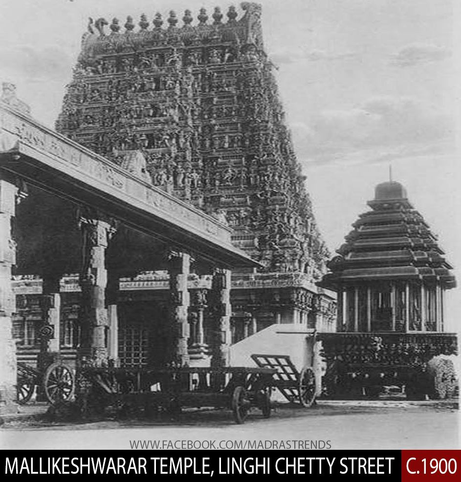

|
 |
|
| | | | | | | | | | | | | | | | | | | | | | | | | | | | |
The city is well known for its beautiful temple architecture, cultural traditions, and religious rituals that attract many visitors every year. Agriculture plays an important role in the local economy, especially tapioca cultivation and sago production, which provide jobs for many families. Government initiatives and public-private partnerships are improving roads, transportation, tourism facilities, and public services. During the monsoon season, rainfall enhances the beauty of parks, lakes, and natural surroundings, though proper drainage systems are necessary for safety. The housing market is steadily growing because of urban development and better infrastructure. These developments improve tourism, economic growth, public safety, and the overall quality of life. |